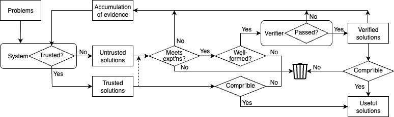

The Empirical Process of Building Trust

- Cycle of trust
- Untrusted system → Untrusted solution
- Check expectations
- Check syntax and structure
- Verification process
- Accumulation of evidence (positive and negative)
- Trusted system → Trusted solution (→ 1.2-1.4)
- Comprehensible trusted solution → Useful solution